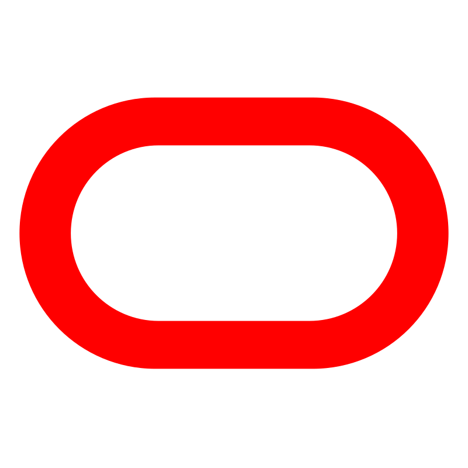

Micronaut Guides
Latest Guides
Oct 09, 2025
Learn how to use Client Credentials Flow between Micronaut microservices with an Authorization Server provided by Oracle Identity Domain.
Jan 03, 2024
Learn to log every HTTP Request header with a @ServerFilter and a method annotated with @FilterRequest.

Learn how to create a Hello World Micronaut application with a controller and a functional test.
Learn how to utilize @Configuration and @ConfigurationBuilder annotations to effectively configure declared properties.
Expose the exact version of code that your application is running.
Learn how to use Micronaut Test REST-Assured to test the REST API of your Micronaut application.

Learn how to send emails with SendGrid from a Micronaut application
 Oracle Cloud
Learn how to send an email with Oracle Cloud Infrastructure (OCI) Email Delivery using the Micronaut framework.
Amazon Web Services
Learn how to send emails with Amazon SES from a Micronaut application

Use RabbitMQ to communicate between your Micronaut applications.
Use RabbitMQ RPC to use request-reply pattern in your Micronaut applications.
Use Kafka to communicate between your Micronaut applications.
Oracle Cloud
Use Oracle Cloud Streaming to communicate between your Micronaut applications.
Learn to log every HTTP Request header with a @ServerFilter and a method annotated with @FilterRequest.
Learn how to schedule periodic tasks inside your Micronaut microservices.

Learn how to use Micronaut caching annotations
Learn how to use a Composite Pattern if you have multiple beans of particular type
Respond to a localized version of your application with LocalizedMessageSource.

Learn how to access a database with Micronaut JDBC repositories.
Learn how to connect a Micronaut Data JDBC application to a Microsoft Azure Database for MySQL
Oracle Cloud
Learn how to deploy a MySQL Micronaut Database Application to Oracle Cloud.
Amazon Web Services
Learn how to connect to an AWS MySQL Database
 Google Cloud Platform
Google Cloud Platform
Learn how to connect to a Google MySQL Database

Learn how to use the Liquibase to manage your schema migrations.
Learn how to use Flyway to manage your schema migrations
Learn how to access a database with Micronaut R2DBC repositories.

Learn how to use a non-blocking reactive streams MongoDB client with a Micronaut application
Learn how to use a blocking MongoClient with a Micronaut application
Learn how to access a database with MyBatis using the Micronaut framework.
Oracle Cloud
Learn how to access an Oracle Autonomous Database using the Micronaut framework.

Learn how to secure a Micronaut application using 'Basic' HTTP Authentication Scheme.
Learn how to secure a Micronaut application using JWT (JSON Web Token) Authentication.
Learn how to leverage token propagation in the Micronaut framework to simplify your code while keeping your microservices secure.
Learn how to expose a keys endpoint with primary and secondary JSON Web Key (JWK)
Learn how to implement mutual authentication using SSL and X.509 certificates.
Learn how to create a Micronaut application and secure it with an Authorization Server provided by Okta.
Learn how to create a Micronaut application and secure it with Strava and provide authentication with OpenID Connect
Learn how to create a Micronaut application and secure it with an Authorization Server provided by Github. Learn how to write your own Authentication Mapper.
Learn how to create a Micronaut application and authenticate with LinkedIn.
Learn how to create a Micronaut application and secure it with an Authorization Server provided by Auth0.
Oracle Cloud
Learn how to create a secured Micronaut application and authenticate with OpenID Connect in Oracle Cloud.
Amazon Web Services
Learn how to create a Micronaut application and secure it with an Authorization Server provided by Cognito.
Google Cloud Platform
Learn how to create a Micronaut application and secure it with Google and provide authentication with OpenID Connect
Learn how to use Client Credentials Flow between Micronaut microservices with an Authorization Server provided by Auth0.
Oracle Cloud
Learn how to use Client Credentials Flow between Micronaut microservices with an Authorization Server provided by Oracle Identity Domain.
Amazon Web Services
Learn how to use Client Credentials Flow between Micronaut microservices with an Authorization Server provided by Amazon Cognito.
Oracle Cloud
Learn how to create secrets in Oracle Cloud Vault and easily access them in a Micronaut application.
Amazon Web Services
Learn how to load your secrets from AWS Secrets Manager in your Micronaut application
Google Cloud Platform
Learn how to use Google Secret Manager
Learn how to configure Cross-Origin Resource Sharing (CORS) in a Micronaut application.
Learn how to use Micronaut low-level HTTP Client. Simplify your code with the declarative HTTP client.
Learn how to download an Excel file with the Micronaut framework and Spreadsheet Builder library.

Learn how to use Micronaut GraphQL.

Use Jaeger distributed tracing to investigate the behaviour of your Micronaut applications.
Use Zipkin distributed tracing to investigate the behaviour of your Micronaut applications.
Use Zipkin distributed tracing to investigate the behavior of your Micronaut applications.
Oracle Cloud
Use Oracle Cloud to investigate the behavior of your Micronaut applications.
Google Cloud Platform
Use Google Cloud Trace to investigate the behavior of your Micronaut applications.

Use Consul service discovery to expose your Micronaut applications.
Use Netflix Eureka service discovery to expose your Micronaut applications.
How to use Kubernetes service discovery and distributed configuration in a Micronaut application
Oracle Cloud
Service discovery and distributed configuration in a Micronaut application with Oracle Cloud Container Engine for Kubernetes (OKE)
Amazon Web Services
Service discovery and distributed configuration in a Micronaut application with Amazon Elastic Kubernetes Service (EKS)
Google Cloud Platform
Service discovery and distributed configuration in a Micronaut application with Google Kubernetes Engine (GKE)
How to use Kubernetes service discovery and distributed configuration in a Micronaut application
Oracle Cloud
Service discovery and distributed configuration in a Micronaut application with Oracle Cloud Container Engine for Kubernetes (OKE)
Amazon Web Services
Service discovery and distributed configuration in a Micronaut application with Amazon Elastic Kubernetes Service (EKS)
Google Cloud Platform
Service discovery and distributed configuration in a Micronaut application with Google Kubernetes Engine (GKE)
Learn how to collect standard and custom metrics with the Micronaut framework.
Oracle Cloud
Learn how to collect standard and custom metrics with the Micronaut framework and monitor them on Oracle Cloud.
Amazon Web Services
Learn how to collect standard and custom metrics with the Micronaut framework and monitor them on Amazon Cloudwatch.
Learn how to generate an executable JAR of a Micronaut application with Maven or Gradle.
Micronaut build plugins offer several ways to build Docker images - JAR, GraalVM native executable, CRaC
Oracle Cloud
Learn how to deploy a Micronaut application to Oracle Cloud.
Amazon Web Services
Learn how easy is to deploy a Micronaut Application to Elastic Beanstalk.
Google Cloud Platform
Learn how to deploy a Micronaut application to Google App Engine Java Flexible Environment
Deploy a Micronaut application to Google Cloud Compute instance.
Deploy a Docker Image containing a CRaC enabled JDK and a pre-warmed, checkpointed application to Google Cloud Run - a fully managed serverless platform for containerized applications.
Google Cloud Platform
Deploy a Docker Image containing a CRaC enabled JDK and a pre-warmed, checkpointed application to Google Cloud Run - a fully managed serverless platform for containerized applications.
How to use Kubernetes service discovery and distributed configuration in a Micronaut application
Oracle Cloud
Service discovery and distributed configuration in a Micronaut application with Oracle Cloud Container Engine for Kubernetes (OKE)
Amazon Web Services
Service discovery and distributed configuration in a Micronaut application with Amazon Elastic Kubernetes Service (EKS)
Google Cloud Platform
Service discovery and distributed configuration in a Micronaut application with Google Kubernetes Engine (GKE)
Oracle Cloud
Learn how to deploy a Micronaut HTTP API Gateway Function (Serverless) application to Oracle Cloud.
Google Cloud Platform
Deploy a Micronaut application as an HTTP Function to Google Cloud Functions - a scalable pay-as-you-go functions-as-a-service (FaaS) to run your code with zero server management.

Amazon Web Services
Learn how to distribute a Micronaut application to AWS Lambda 17 Runtime
Google Cloud Platform
Deploy a Micronaut application to Google Cloud Run - a fully managed serverless platform for containerized applications.
Run the Turbo Native Demo with a Micronaut application as the backend.